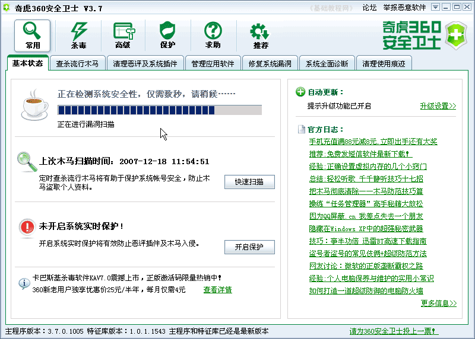
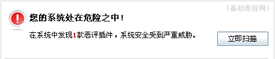
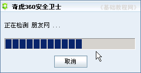
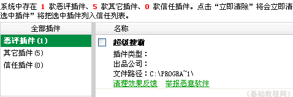
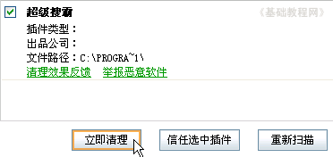
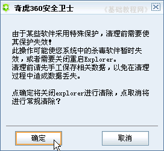
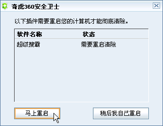

360安全卫士操作基础
二、清理插件 返回目录
安装好以后，就可以使用安全卫士了，我们可以用它来检查系统的安全性，也可以清理一些不想要的插件；
1、运行程序
1）在桌面找到一个绿色盾牌的图标，这个就是安全卫士的快捷方式，双击运行360安全卫士；
2）程序运行后，首先进行系统检查，上面有个进度条不断移动，过一会完成后会给出提示，
一般来说，绿色是安全的，黄色是警告提醒，红色是发现问题；

3）如果出现红色提示，那么就是有问题了，旁边的按钮是“立即扫描”；

4）点右边的“立即扫描”按钮，出来一个扫描进度条；

5）扫描完成后给出一个结果列表，上面有各个插件的数量，以及操作提示，
中间的列表里有恶评插件的名称、公司和安装位置；

6）在这个插件的旁边小方框里点一下，打勾选中这个插件，然后点下面的“立即清理”按钮；

7）出来一个提示，要关闭桌面，把其他打开的文件保存一下或关闭掉，然后点“确定”，
接下来出来一个提示面板，关闭保存其他打开的文件后，点“马上重启”，电脑将会重启动；
 
8）还可以在左边点击“其他插件”、“信任插件”，来看一下里面的列表，点击里面的名称，可以看一下相关提示，注意细心操作；
本节学习了清理恶评插件的基本方法，如果你成功地完成了练习，请继续学习下一课内容；
本教程由86团学校TeliuTe制作|著作权所有
基础教程网：http://teliute.org/
美丽的校园……
转载和引用本站内容，请保留版权信息和本站链接。